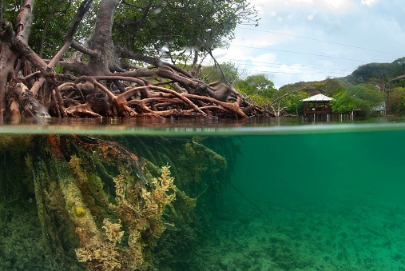
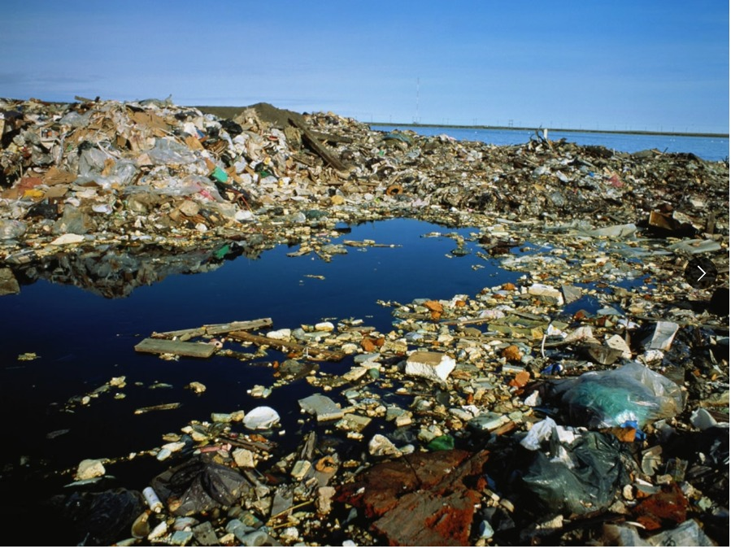

Edukasi Mangrove dan Mikroplastik
Poin-Poin Utama Mangrove

"Mangrove melindungi pantai dan menyimpan karbon sekaligus, dan manfaat itu hilang begitu hutannya ditebang."
-
1. Pelindung Pesisir
Akar mangrove meredam gelombang, menahan lumpur, dan mengurangi abrasi, banjir rob, serta dampak badai
-
2. Gudang Karbon
Karbon tersimpan di batang, daun, dan terutama tanah sedimen, bisa bertahan ribuan tahun jika ekosistem utuh
-
3. Kondisi di Indonesia
Sekitar 3,4 juta hektare, atau sekitar seperlima dari total mangrove dunia
-
4. Ancaman Kerusakan
Tambak, pembangunan pesisir, dan penebangan membuat luas mangrove berkurang
-
5. Dampak Kerusakan
Karbon terlepas ke atmosfer sebagai gas rumah kaca mengakibatkan proteksi alami pantai hilang
-
6. Upaya Pelestarian
Lindungi mangrove yang masih utuh, pulihkan area rusak dengan jenis dan lokasi tanam yang tepat
-
7. Pantau Penanaman
Agar bibit tumbuh dengan baik dan tidak gagal karena lokasi yang tidak sesuai
-
±3,4 juta ha
mangrove Indonesia, ±⅕ mangrove dunia
Poin Poin Utama Mikroplastic
-
1. Pengertian
Partikel plastik berukuran kurang dari 5 mm yang terbentuk dari pecahan plastik atau memang dibuat
-
2. Penyebab
Sinar matahari, gelombang, dan gesekan memecah plastik menjadi serpihan kecil
-
3. Rantai Makanan
Dimakan zooplankton, kerang, dan ikan kecil, lalu berpindah antarmakhluk hidup
-
4. Potensi Bahaya
Dapat membawa zat polutan yang menempel pada permukaannya
-
5. Terdeteksi dalam
Air minum, garam, udara, hingga darah manusia
-
6. Dampak Kesehatan
Masih diteliti sehingga perlu diwaspadai tanpa perlu panik
-
7. Upaya Pencegahan
Mengurangi plastik sekali pakai, cuci pakaian dengan bijak, dan memilah sampah dengan benar agar tidak masuk ke sungai maupun laut
-
8. Dari Sumber
Aksi bersih-bersih pantai saja tidak cukup tanpa mengurangi penggunaan plastik sejak awal

"Plastik yang kita buang hari ini bisa kembali ke tubuh kita dalam bentuk yang jauh lebih kecil."